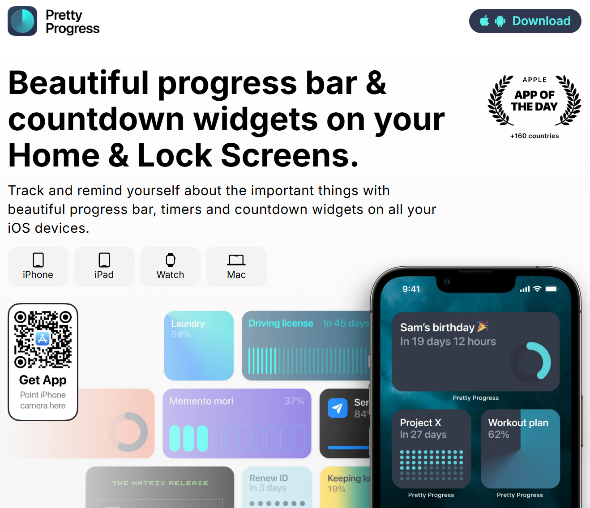
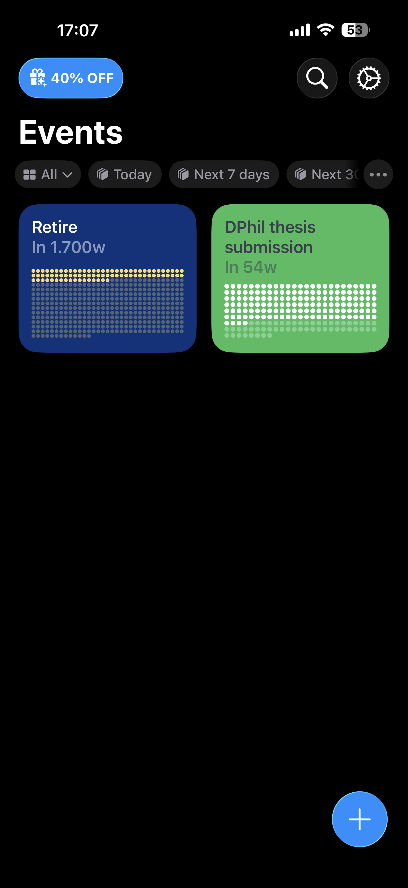

AI as a life tool
![]()
Disclaimer
- Scan this for the slide
- This is NOT the best way to use AI
- I’m sharing how I use it
- Please question me, challenge me, disagree with me (but don’t hit me)
Prompting 101
I want to study finance basics, but I don’t know how to ask you. Please ask me what you need and then generate a good prompt once you have enough information
Got it 👍 To create the right prompt for you, I need to understand a few things about your goals and preferences. Let me ask you step by step:
Purpose: Why do you want to learn finance basics? (e.g., personal money management, investing, understanding economics, career development, etc.)
Level: Do you want a very simple, beginner-friendly explanation (like everyday examples), or a bit more structured (with some technical terms, formulas, etc.)?
Format: How do you prefer to learn? (e.g., short lessons, Q&A style, exercises, summaries, real-life applications)
Focus areas: Finance is broad. Which areas interest you most? Personal finance (budgeting, saving, debt, retirement planning), Investing (stocks, bonds, funds, property), Business finance (cash flow, profit/loss, company value), Economics & money systems (banks, inflation, central banks)
Time: How much time do you want to spend learning (daily/weekly)? Do you prefer a quick crash course or a slower step-by-step path?
👉 Once you answer these, I’ll put everything together into a clear, ready-to-use prompt that you can copy/paste to guide our finance learning journey.
Prompting 101
- Personal money management; 2. Very simple, beginner-friendly; 3. Short lessons; 4. Personal finance; 5. 30 minutes daily, I prefer a quick crash course
Perfect — thanks for the clear answers. Based on what you told me, here’s a ready-to-use prompt you can copy and use with me anytime:
Prompt: “I want to learn personal finance basics for personal money management. Please teach me in very simple, beginner-friendly language through short lessons, like a 30-day crash course I can study for about 30 minutes each day. Focus only on personal finance (budgeting, saving, debt, retirement planning, etc.), not business or advanced investing. Make each lesson practical, easy to understand, and with small exercises or examples I can apply right away.”
Do you want me to actually design this 30-day crash course outline for you now, so you can see the roadmap before starting?
Prompting 101
- Provide enough information and context
- Tell it how to show the results, share examples if you have them
- “Give me a bulleted list”
- “Show me an R code using tidyverse style”
- For complex tasks, ask step by step
- Good prompts = good communication
My 3 steps for everything
- Learn
- Mindset
- Action
Step 1. Learn
- Know how AI works (thanks Tuyen!)
- Ask better questions: provide sufficient information
- If you don’t like the output: try to fix it (instead of getting angry)
Step 2. Mindset
- AI = super enthusiastic intern
- You = the supervisor
- Don’t hand over your work: stay in control
- Treat it like mentoring a junior: it learns from you
- You remain the expert, AI just assists
Step 3. Action
- Talk to AI → discover strengths & limits
- Compare: where AI beats you, where you stay valuable
- Build confidence using it daily
Learn new skills
I was told that seeing reality clearly is really helpful for stress control. When thoughts come up, it is important to notice if they are real things or just in my head. I will use this chat for doing reality checks. Could you suggest me a very short but efficient way how are we going to work on this?
We can use just two steps for every thought you bring here:
Step 1. Ask: 👉 “Is this happening right now in reality, or only in my head?”
Step 2. Label:
Reality → something you can see, hear, touch, or prove.
Thought → story, fear, memory, or prediction.
That’s it. I’ll help you do the labelling when you write your thoughts here. Over time, you’ll start doing it automatically.
Do you want me to keep the answers very short (just “Reality” or “Thought”), or would you prefer a tiny bit of explanation each time?
Discuss a book
I’m reading a book called “Four Thousand Weeks: Time Management for Mortals”. I’m fascinated by viewing time in weeks. A week is short enough to take control, and long enough to see progress. It ends with a deep break on the weekend. What am I missing in this perspective?
That’s a sharp observation. Seeing life in weeks is powerful because it gives you a rhythm that’s neither too microscopic (hours, which can feel frantic) nor too abstract (years, which can feel distant). But there are a few blind spots you might be missing:
Weeks are artificial: A week isn’t a natural unit of time like a day (sunrise–sunset) or a year (Earth’s orbit). It’s a social construct. This means while it feels like a natural reset, your body or goals might not always sync neatly with that 7-day rhythm. For example, recovery, creativity, or learning curves often don’t obey a weekly cycle.
Risk of over-resetting: If every week feels like a fresh start, you may unintentionally devalue the continuity of long-term work. Some projects need momentum across many weeks, and focusing too much on weekly “resets” might make you restart energy or habits instead of compounding them.
Discuss a book
Find an iOS app to countdown to an event. It should show how many weeks have passed since I set a goal, and how many weeks are left until the event. I want a graph, not just a number counter, and it must have a home screen widget
Cool idea — this is a good checklist of what to look for. I poked around; there are apps that hit many of your criteria, though maybe none perfect. Here are some that get close + suggestions + what to check so you can pick the best.
| App | What it does well | What’s missing |
|---|---|---|
| Pretty Progress | Very strong candidate. You can set a start & end date. Widgets show count up & count down. It supports displaying % completion, time passed vs time remaining. | Might need PRO for some dashboard / widget styles. Check whether the widget graphically shows weeks passed vs weeks remaining (not just days %) — since you care about weeks, see if you can set the unit to weeks. |
Discuss a book


Refine writing
Make sure the grammar is correct and give me 5 versions for this: “The majority of ECR and senior faculty members (>50%) were satisfied with the level of mentorship they were received. Mid-career researchers (lecturer - 62% and assistant professors - 56%) reported neutral or disagree with this statement.”
Here are five grammatically correct and stylistically varied versions of your sentence:
Version 1 (clear and formal): The majority of early-career researchers and senior faculty members (>50%) were satisfied with the mentorship they received. In contrast, most mid-career researchers—62% of lecturers and 56% of assistant professors—responded neutrally or disagreed.
Version 2 (concise): More than half of early-career researchers and senior faculty reported satisfaction with mentorship, while 62% of lecturers and 56% of assistant professors gave neutral or negative responses.
Version 3 (contrast emphasis): While most early-career researchers and senior faculty (>50%) expressed satisfaction with mentorship, mid-career researchers were less positive: 62% of lecturers and 56% of assistant professors were neutral or disagreed.
Version 4 (data-led): Over half of early-career researchers and senior faculty reported being satisfied with their mentorship. By contrast, 62% of lecturers and 56% of assistant professors indicated neutral or negative views.
Version 5 (smooth narrative): Satisfaction with mentorship was reported by the majority of early-career researchers and senior faculty (>50%). However, among mid-career researchers, 62% of lecturers and 56% of assistant professors gave neutral or disagreeing responses.
Refine emails
Give it 3 emails I’m proud of and let it discover the style I like:
Tone and voice
- Professional but friendly: respectful, warm, and human.
- Never too formal or stiff; slightly casual is okay if context allows.
- Sincere and humble: expressions of gratitude or apology are genuine, not exaggerated.
Structure
- Start with a clear greeting and a short contextual sentence.
- Body should get straight to the point: one paragraph per key idea.
- End with a short, polite sign-off that doesn’t repeat too much.
Language
- Use natural, spoken English: contractions like “I’m” or “we’re” are fine.
- Avoid flowery or overly elaborate words (e.g., “It would be an immense honour…” feels too much).
- Prefer plain and honest phrases (e.g., “Just want to check if…” / “I’m sorry I forgot”).
Refine emails
Dear Julie,
I made the line plot showing case count in R but there is actually a discrepancy between the data I’m using vs you’re using lol. The number just doesn’t match. Let solve this during our discussion in the next hour.
Best, Thinh.
Here’s a revised version that keeps your tone natural and friendly, but polishes the clarity and flow:
Subject: Quick note before our meeting
Dear Julie,
I’ve plotted the case counts in R, but it looks like there’s a discrepancy between the dataset I’m using and yours — the numbers don’t match up. Let’s go through it together during our discussion in the next hour.
Best, Thinh
Let me know if you’d like a more formal or more casual version.
Personal coach
Act as an interviewer for a data analyst position at WHO. Ask me one question at a time, give feedback on my answers, and suggest how I can improve
Alright, let’s get into interview mode!
Here’s your first question:
Q1: At the World Health Organization, we often work with large, messy datasets from different countries. Can you walk me through how you would approach cleaning and preparing such a dataset for analysis?
Take your time answering, and then I’ll give you feedback and tips.
My favourite prompts
- What options do I have?
- I’m debating between X and Y: what are the pros and cons of each?
- What’s the strongest argument against my current view?
- Give me 3 alternative framings of this problem, each from a different perspective
- If I was completely wrong, what would the world look like?
(Keep being challenged and avoid bias)
Takeaway
- Learn > Mindset > Action
- AI is a super enthusiastic intern, supervise it carefully
- Let it free up your time for what really matters